Naše první dojmy z Hong Kongu by se daly shrnout stručně: je to takový asijský Londýn :-). Bývalá britská kolonie nezapře podobnost s evropskou metropolí, od které převzala řadu typických znaků - jezdí se tu vlevo, krom typických double deckerů tu mají dokonce i dvoupatrové šaliny a celkově je systém městské hromadné dopravy velice podobný s tím londýnským. A je tu spousta lidí. Všude.
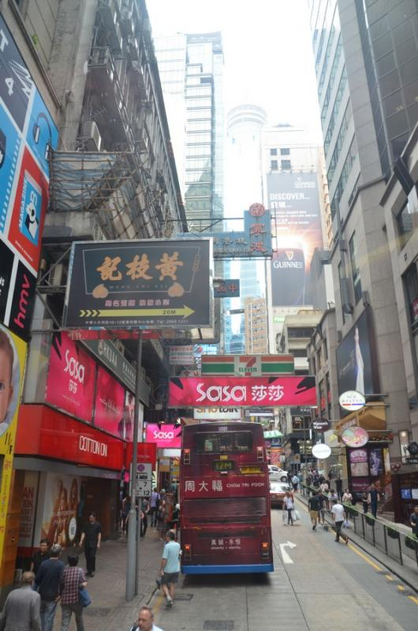
Hong Kongský double decker
V sobotu ráno jsme se sešli s Phyllis, která nám představila svého přítele Longa, a všichni společně jsme se vydali na královskou snídani. A to slovo “královská” je naprosto na místě - naše snídaně se totiž nesla v duchu dim sum. Dim sum je speciální kantonské “jídlo”, které se jí jako snídaně, brunch či oběd. Skládá se z mnoha různých pokrmů, o něž se mají spolustolovníci podělit, a je to společenská událost. Pochutiny z dim sum se většinou vaří v páře v malých bambusových košíčcích a nejčastěji se jedná o různé sladké či slané knedlíčky nebo závitky.
Dim sum jsme zahájili čajem, jak je zvykem, a pak už se jen slastně cpali všema těma dobrotama, které Phyllis s Longem navybírali. Mým osobním favoritem se staly sladké knedlíčky se žloutkovou náplní, ale výborné byly i krevetové “sea food balls” nebo “klasické” knedlíčky plněné mletým vepřovým masem.
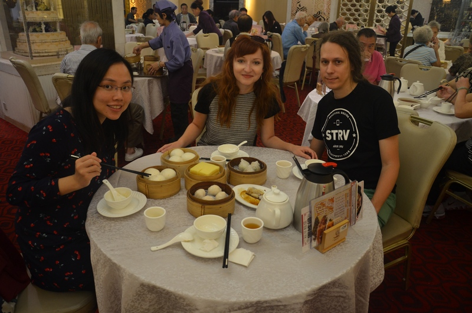
Dim sum dobroty
Slušně přecpaní jsme pokračovali směrem na Exchange square. V komplexu sídlí hongkongská burza, množství různých firem a také Mezinárodní finanční centrum (IFC).
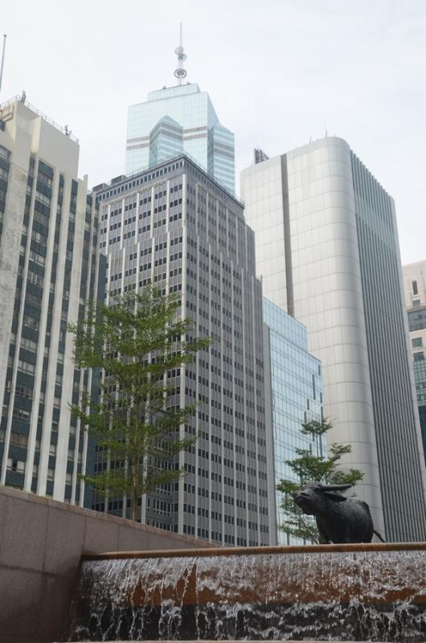
Exchange square
Odtud jsme se vydali double deckerem k Hong Kongské zoologické a botanické zahradě, která je otevřená veřejnosti již od roku 1864! Je to opravdu krásné a klidné místo, které by v přelidněné metropoli člověk nečekal. Žijí zde stovky druhů ptáků, z nichž některé jsem viděla poprvé v životě. Zdejší zoo patří ve světě mezi hlavní chovná centra pro záchranu ohrožených druhů. A co je moc fajn bonus - neplatí se zde vůbec žádné vstupné.
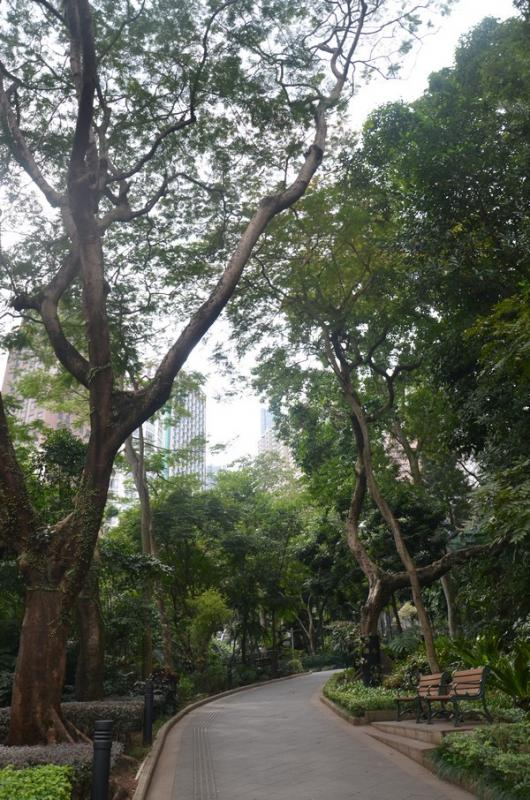
V zoo
Ze zoo jsme plynule pokračovali k přilehlému Hong Kong Parku, který je jedním z nejneobvyklejších parků na světě. Byl totiž úmyslně navržen tak, aby vůbec nevypadal přírodně.
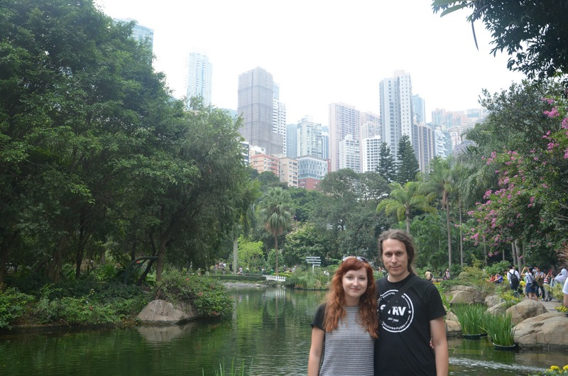
Džungle v džungli
Zdaleka nejlepší zdejší atrakcí je voliéra Edwarda Youda, pojmenovaná po někdejším oblíbeném guvernérovi Hong Kongu. Obří voliéra je domovem stovek ptáků a je přesvědčivým, uměle vytvořeným tropickým pralesem. Návštěvníci tudy procházejí po dřevěných lávkách zavěšených ve výšce 10 m nad zemí a mohou pozorovat pestře zbarvené opeřence docela zblízka.
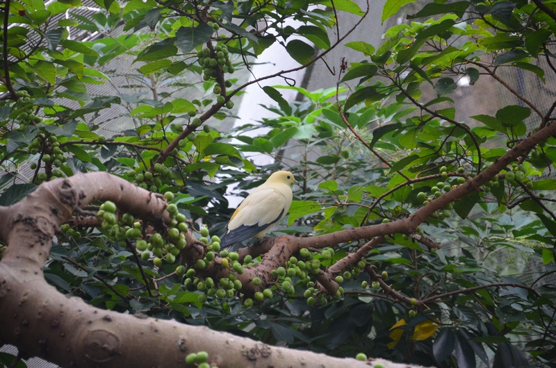
Život v korunách stromů
Mezitím už se nám podařilo vytrávit bohatou snídani, a tak nás Phyllis s Longem vzali do své oblíbené fast food restaurace, abychom si zase trochu nacpali pupíky, než se vydáme na procházku po čtvrti Sheung Wan, která si prý dodnes místy zachovala nádech “starého” Hong Kongu.
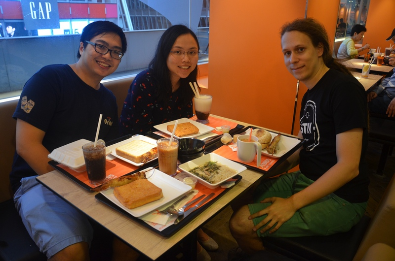
Už máme zase hlad!
V Sheung Wan, které tvoří staré čínské jádro ostrova Hong Kong, najdete spoustu tradičních uměleckých obchůdku i pouličních stánků s všelijakou veteší :-). A také jeden z nejstarších chrámu v Hong Kongu - Man Mo Temple.
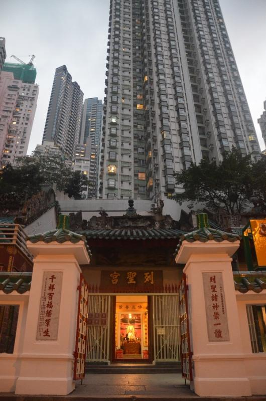
Man Mo Temple - chrám mezi mrakodrapy
Po návštěvě chrámu s námi ještě Phyllis a Long prošli přilehlý “wet market” - typické asijské tržiště, kde se prodávají krom čerstvého masa a zeleniny také živá zvířata. Takhle navečer už ale většinou stánky i samotný trh zejí prázdnotou, což pro nás bylo možná dobře. Wet market není místem pro útlocitné povahy a pohled na hromadu živých žab nacpaných v klecích je asi něco, co si rádi odpustíte. No, ale to jsem ještě netušila, co si na nás Phyllis na završení tohoto dne přichystala :-D!
K naší cílové stanici - hot pot restauraci - jsme se tentokrát přesunuli v double decker tramvaji. Tyto vysoké, úzké tramvaje jsou jedinými dvoupatrovými tramvajemi na světě a jízda v nich je opravdu retro záležitost.
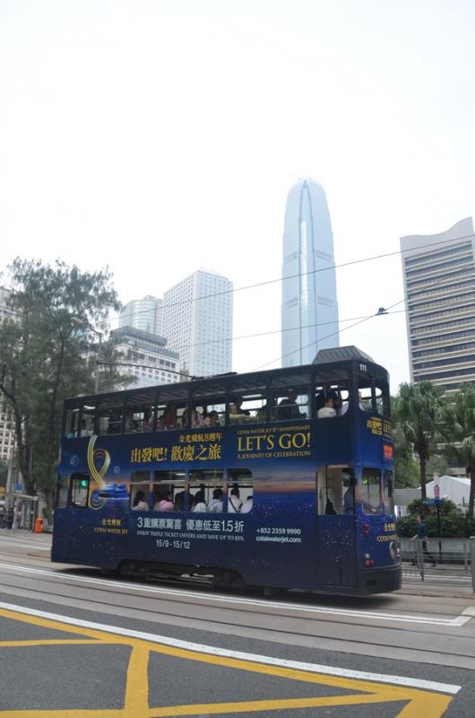
Místní rarita - dvoupatrové “šaliny”
Tramvaj nás vyplivla nedaleko restaurace. Její prostory byly jedním slovem obrovské a i přesto bylo vevnitř narváno. To nás utěšilo jako záruka kvality, protože jinak to v interiéru opět nevypadalo úplně vábně :-D! S jídlem jsme ale byli moc spokojeni. Phyllis s Longem objednali klasický hot pot a ochutnali jsme opět všechno možné od zeleniny přes rybu až po…
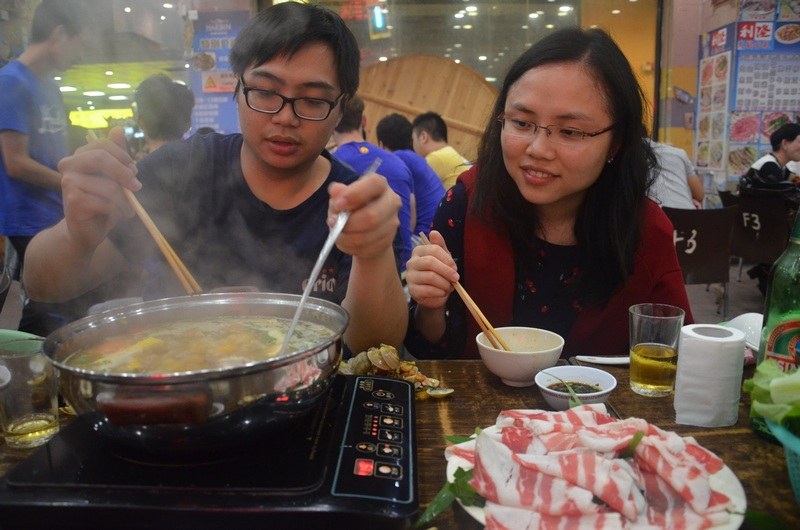
Večeře z hot potu
Když Phyllis na naše lehce zděšené dotazy na wet marketu ohledně konzumace žab odvětila, že její máma je doma občas vaří a že jestli chceme, můžeme je ochutnat, myslela jsem, že si dělá srandu. Ale pak nám přinesli na talíři tohle…
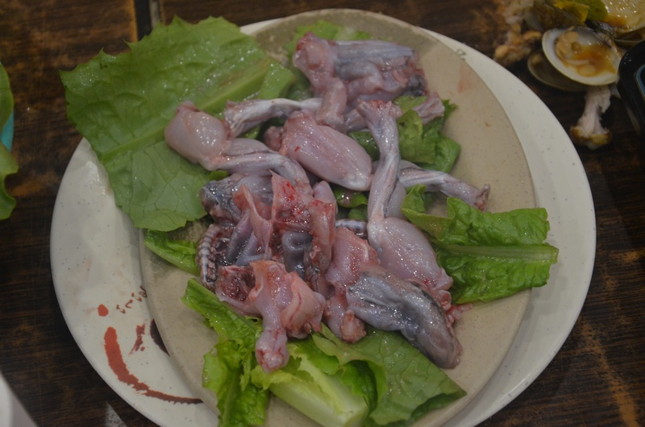
Žába? To nesním!
O čerstvosti masa jsme pochybovat vůbec nemuseli - ještě se totiž na talíři hýbalo! Máme to dokonce i natočené na videu, protože jinak by nám to snad nikdo ani nevěřil. V první chvíli jsem si samozřejmě říkala, že žábu v žádném případě nesním. Rozhodně ne tuhle, která se přede mnou ještě zmítá v posmrtné křeči! Ale pak ji Phyllis povařila v hot potu a povzbudivě mi nabídla :-D… A tak jsem vyměkla a zkusila ji (přiznávám, že z velké části proto, abych o tom pak mohla doma vyprávět :-D). Chuťově bych ji přirovnala asi ke králíkovi a určitě bych ji neoznačila za top gastro zážitek. Jako gastro historka to však myslím nemá konkurenci :D!
Po večeři už byl čas se s Phyllis a s Longem rozloučit a poděkovat jim za to, jak báječný den nám v Hong Kongu připravili. Opět se nám potvrdilo, že poznávat cizí město s místními je prostě zábava a člověk toho mnohem víc zažije. Následující den už jsme zase měli vyrazit prozkoumávat Hong Kong na vlastní pěst. Tentokrát to ovšem bylo docela žádoucí, protože Péťa si návštěvu ostrova Lantau vyhradil pro okamžik, u kterého žádné další svědky nepotřeboval ;-)